d_propuesta_def <- function(x, mean){
dnorm(x, mean, sd= 1)
}
# TODO: agregar tasa de aceptación a la funcion
sample_mh <- function (d_objetivo, r_propuesta, d_propuesta = d_propuesta_def, p_inicial, n){
stopifnot(n>0)
salto = 0
muestras <- numeric(n)
muestras[1]<-p_inicial
for (i in 2:n) {
p_actual <- muestras[i-1]
p_nuevo <- r_propuesta(p_actual)
f_actual <- d_objetivo(p_actual)
f_nuevo <- d_objetivo(p_nuevo)
q_actual <- d_propuesta(p_actual,mean=p_nuevo)
q_nuevo <- d_propuesta(p_nuevo,mean=p_actual)
alpha <- min(1, (f_nuevo/f_actual)*(q_actual/q_nuevo))
aceptar <- rbinom(1,1, alpha)
if (aceptar){
muestras[i] <- p_nuevo
salto = salto + 1 # TODO: agregar tasa de aceptación a la funcion
} else {
muestras[i] <- p_actual
}
}
tasa_acepta = (salto/n)*100# TODO: agregar tasa de aceptación a la funcion
#print( tasa_acepta)
return ( muestras )
}Trabajo Práctico 2: Metropolis-Hastings
Introducción
Metropolis-Hastings es un proceso para generar muestras pseudoaleatorias de distribuciones objetivo. Se trata de un proceso iterativo que comienza en un punto inicial en el espacio de muestras, luego, propone un “salto” a un nuevo punto utilizando una distribución de probabilidad propuesta. Este salto es evaluado mediante un criterio de aceptación basado en la relación entre la densidad en el nuevo punto y en el punto actual. Si el salto es aceptado, el algoritmo se mueve al nuevo punto, sino, permanece en el punto actual. Este proceso se repite muchas veces para explorar y muestrear de manera eficiente. En este trabajo práctico, se explorará la aplicabilidad y el rendimiento del algoritmo para distintas distribuciones objetivo y propuestas.
Objetivo
Se propone explorar y comprender el funcionamiento y la utilidad del algoritmo de Metropolis-Hastings en diferentes situaciones. Se abordarán ejercicios que van desde la generación de muestras unidimensionales, hasta la aplicación del algoritmo en problemas más complejos como la generación de muestras de una distribución normal bivariada y la estimación de la distribución a posteriori de una funciones de densidad complejas. A través de estos ejercicios, se buscará evaluar el desempeño del algoritmo y comprender sus ventajas y limitaciones en la generación de muestras de distribuciones de probabilidad.
Metropolis Hastings en 1D
Para entrar en calor, se comienza declarando una función que implemente el algoritmo de Metropolis-Hastings para tomar muestras de una distribución de probabilidad unidimensional. El algoritmo permiete elegir entre un punto de inicio arbitrario o al azar y utiliza la distribución propuesta de transición arbitraria (por defecto, se utiliza una distribución normal estándar).
Algoritmo MH en 1 D
Distribución de Kumaraswamy
La distribución de Kumaraswamy es una distribución de probabilidad continua que se utiliza para modelar variables aleatorias con soporte en el intervalo \((0;1)\).
Conociendo a Jagdish Kumaraswamy
Se grafica la función de densidad de la distribución de Kumaraswamy para 5 combinaciones de los parámetros \(a\) y \(b\) con el objetivo de familiarizarse con su comportamiento.
d_kumaraswamy <- function(x, a ,b){
if(x<0 || x>1){
f=0
}else{
f <- a*b*(x^(a-1))*(1-x^a)^(b-1)
}
return(f)
}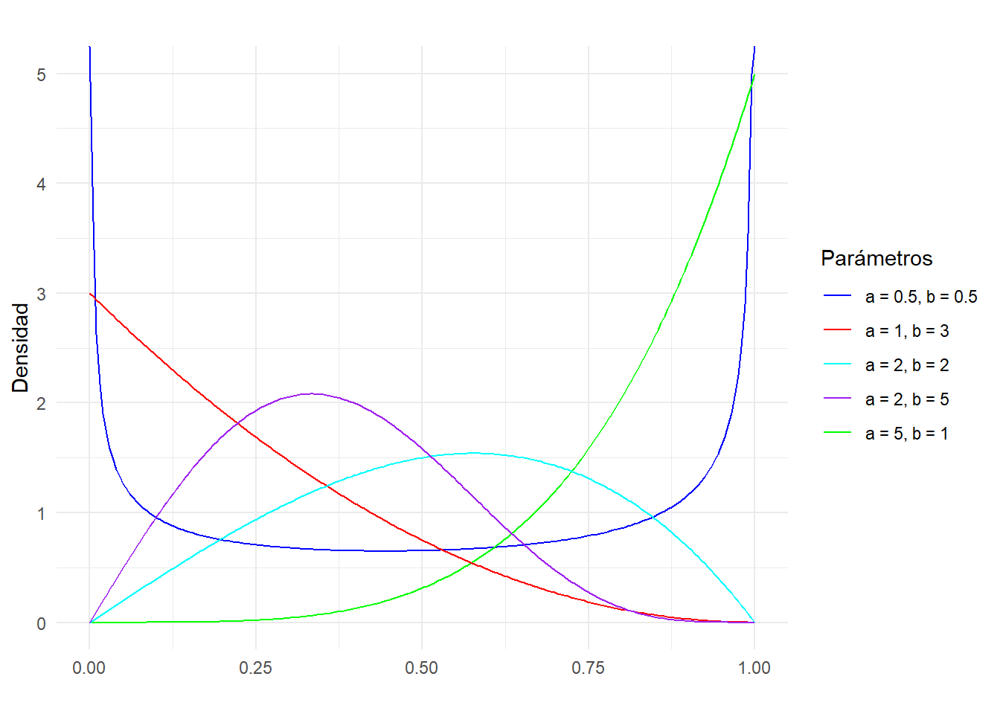
La distribución de Kumaraswamy resulta muy útil a la hora de realizar estudios bayesianos, ya que presenta una es gran flexibilidad y puede modelar una amplia gama de formas de distribución de probabilidad. Ademas presenta una función de densidad de probabilidad simple y computacionalmente eficiente, lo que facilita su uso en cálculos bayesianos. Por último, vale destacar que la restricción al intervalo \((0;1)\) resulta útil porque se adapta naturalmente al modelado de proporciones y probabilidades.
MH para Jagdish
Se utiliza la función construida en el punto 1, obtenga 5000 muestras de una distribución de Kumaraswamy con parámetros \(a=6 , b=2\) y una distribución de propuesta beta.
get_beta_pars <- function(mu, kappa){
alpha <- mu *kappa
beta <- (1-mu)*kappa
return(list(alpha = alpha, beta = beta))
}
#graficar kumaraswamy 6 2, y una beta 8,2 para mostrar que son parecidas
d_objetivo <- function(x, a=6 ,b=2){
if(x<0 || x>1){
f=0
}else{
f <- a*b*(x^(a-1))*(1-x^a)^(b-1)
}
return(f)
}Se observan las cadenas obtenidas utilizando tres grados de concentración distintos \(kappas = 1\), \(25\) y \(50\)
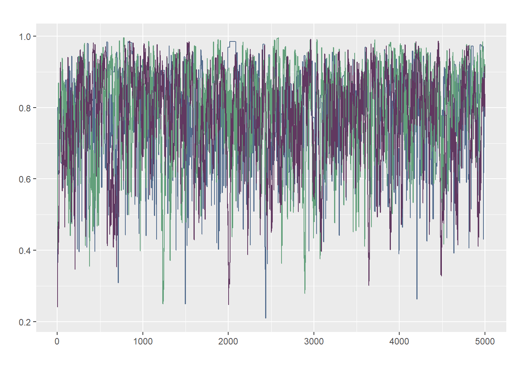
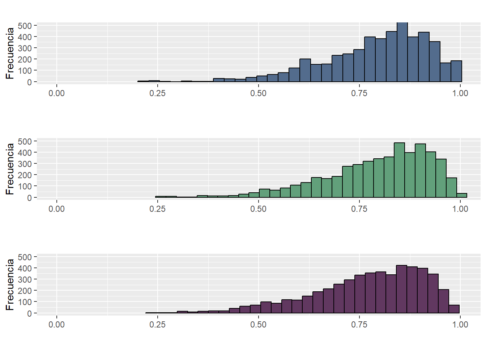
calcular_w <- function(x){
mean(apply(x, 2, var))
}
calcular_b <- function(x){
media_chain <- apply(x, 2, mean)
var(media_chain) * nrow(x)
}
R_hat <- function(x){
S <- nrow(x)
M <- ncol(x)
W <- calcular_w(x)
B <- calcular_b(x)
numerador <- (S-1)/S * W + (1 / S) * B
sqrt(numerador / W)
}corr <- acf(muestras[,3], plot = FALSE, lag = Inf)
N_eff <- function(x){
n_eff <- numeric(ncol(x))
for (i in 1:ncol(x)) {
S <- nrow(x)
autocorr <- acf(x[,i], plot = FALSE, lag = Inf)$acf
limite <- which(autocorr<0.05)[1]
denominador <- 1 + 2 * sum(autocorr[2:limite])
n_eff[i] <- S / denominador
}
return(n_eff)
}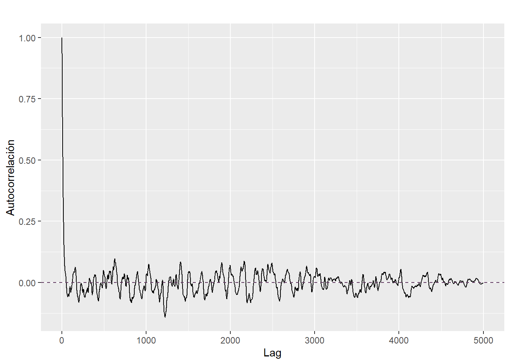
Lo primero que se puede mencionar es la diferencia en las tasas de aceptación, las cuales fueron \(21.72\) %, \(77.9\)% y \(81.66\)% y los números efectivos de muestras \(522.36\), \(345.08\) y \(133.14\) respectivamente. En cuanto a los recorridos de las muestras, se observa aleatoridad o un patrón de ruido blanco. Finalmente observamos el \(\hat{R}\) el cual resultó ser \(1.003404\) lo que nos indica converngencia entren cadenas. Tambien, se presentan histogramas de frecuencias observadas para las distintas muestras y se obaservan comportamientos similares para las tres concentraciones elegidas.
Explorando cadenas
Se presenta una tabla con la media de la distribución y los percentiles 5 y 95 de cada una de las cadenas obtenidas
| Medias | Percentil 5 | Percentil 95 | |
|---|---|---|---|
| Kappa = 1 | 0.791 | 0.550 | 0.969 |
| Kappa = 25 | 0.796 | 0.543 | 0.962 |
| Kappa = 50 | 0.771 | 0.506 | 0.948 |
Se replica la misma tabla para el \(logit(x)\) de las muestras.
| Medias | Percentil 5 | Percentil 95 | |
|---|---|---|---|
| Kappa = 1 | 1.556 | 0.200 | 3.435 |
| Kappa = 25 | 1.590 | 0.172 | 3.234 |
| Kappa = 50 | 1.402 | 0.024 | 2.911 |
Metropolis-Hastings en 2D
Para extender el algoritmo de Metropolis-Hastings se generaliza la función permitiendole implementar el proceso para más de una dimensión. Se plantea una probabilidad de salto normal bivariada de matriz de covarianza variable y se otorga flexibilidad al algoritmo haciendo que reciba como argumento la matriz de covarianza de la probabilidad de transición.
sample_mh_2d <- function (d_objetivo, r_propuesta, d_propuesta, p_inicial, n, sigma_prop){
stopifnot(n>0)
salto = 0
muestras <- matrix(nrow = n, ncol = length(p_inicial))
muestras[1,]<-p_inicial
for (i in 2:n) {
p_actual <- muestras[i-1,]
p_nuevo <- r_propuesta(p_actual)
f_actual <- d_objetivo(p_actual)
f_nuevo <- d_objetivo(p_nuevo)
q_actual <- d_propuesta(p_actual,mean=p_nuevo)
q_nuevo <- d_propuesta(p_nuevo,mean=p_actual)
alpha <- min(1, (f_nuevo/f_actual)*(q_actual/q_nuevo))
aceptar <- rbinom(1,1, alpha)
if (aceptar){
muestras[i,] <- p_nuevo
salto = salto + 1
} else {
muestras[i,] <- p_actual
}
}
tasa_acepta <- (salto/n)*100
#print(tasa_acepta)
return ( muestras )
}Conociendo a MH en 2D
Para comenzar a explorar el comportamiento del algoritmo en dos dimensiones se obtendran muestras de una distribución normal bivariada con media \[ \mu = \begin{pmatrix} 0.4 \\ 0.75 \end{pmatrix} \] y matriz de covarianza \[\Sigma=\begin{pmatrix} 0.35 & 0.4 \\ 0.4 & 2.4 \end{pmatrix} \]
Se comienza graficando la distribución objetivo para seleccionar un punto inicial contenido en el recorrido de la misma.

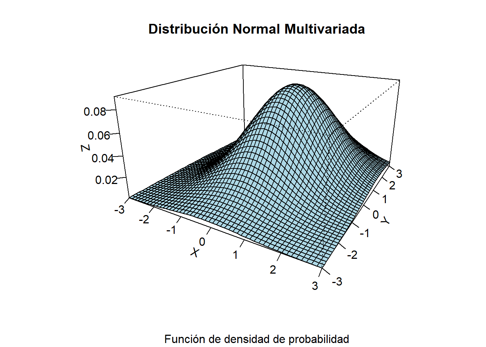
Luego se utiliza la función sample_mh_2d para obtener cinco mil muestras de esta distribución y se grafican.
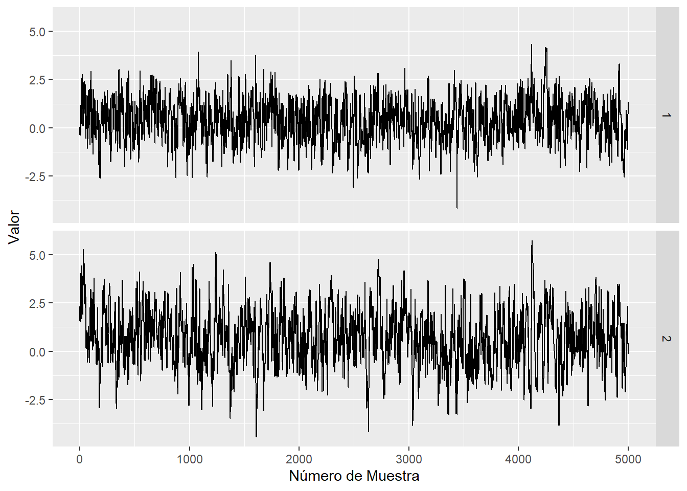
plot_trace <- function(x, y){
n <-length(x)
df <- data.frame(x = rep(1:n, 2), y = c(x, y), dimension = rep(1:2, each = n))
ggplot(df)+
geom_line(aes(x = x, y = y), color = "#536C8D")+
facet_grid(rows = vars(dimension))+
labs(x = "Número de Muestra", y = "Valor")
}
plot_trace(muestras_2d_df$V1, muestras_2d_df$V2)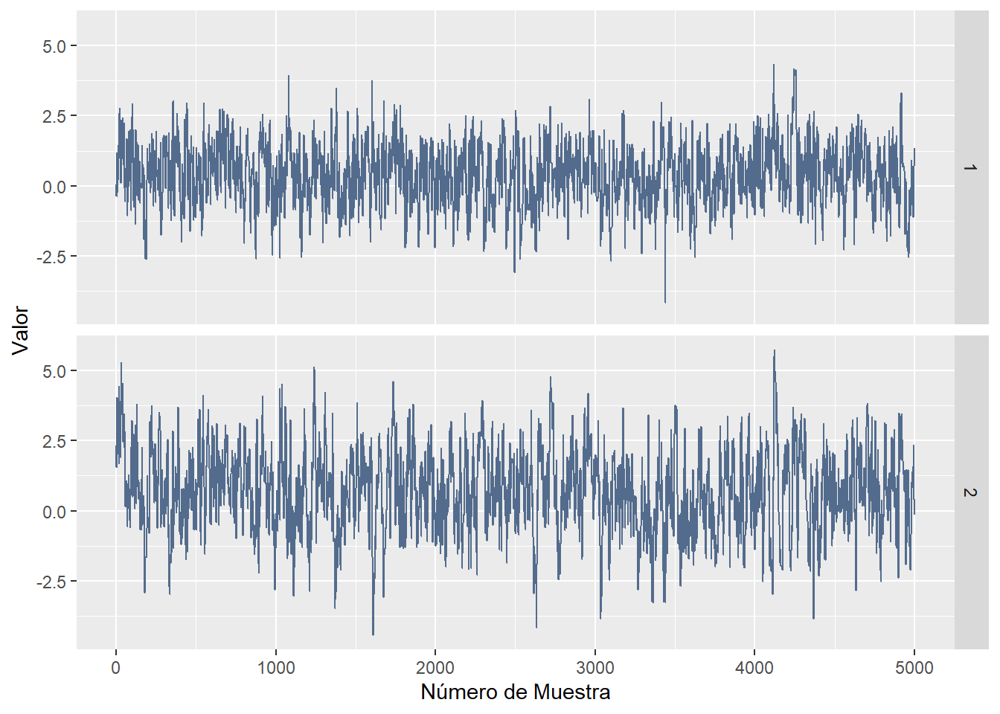
Se observa nuevamente un patrón de ruido blanco en los Trace Plot, lo cual indica una mustra poco correlacionada a través de las observaciones. Mientras que el número efectivo de muestras para \(X_1\) es igual a \(481.98\) y para \(X_2\) resulta \(363.31\), lo cual indica que nuestras cinco mil muestras correlacionadas equivalen a cuatrocientas ochenta y dos y trecientas secenta y tres muestras independientes, respectivamente.
A fines de comparar la calidad de las muestras obtenidas, se calculan y comparan algunas probabilidades mediante distitntos metodos.
| Muestras | Montecarlo | Grilla | Prob. Exacta | |
|---|---|---|---|---|
| P(X1> 1, X2< 0) | 0.0748 | 0.0736 | 0.0691 | 0.0683 |
| P(X1> 1, X2> 2) | 0.0814 | 0.0850 | 0.0762 | 0.0870 |
| P(X1> 0.4, X2> 0.75) | 0.2734 | 0.2816 | 0.2775 | 0.2857 |
Como se observa en la tabla, si bien las probabilidades obtenidas mediante el metodo de Monte Carlo son las que más se aproximan a las reales, con el método de Metropolis Hasting se obtienen muy buenas aproximaciones. Vale aclarar que en situaciones más complejas, donde se dificulta el calculo de las probabilidades exactas, la aplicación de MH toma mayor importancia.
Función de Rosenbrock
La función de Rosenbrock, comunmente conocida como la “banana de Rosenbrock”, es una función matemática utilizada frecuentemente como un problema de optimización y prueba para algoritmos de optimización numérica. También es muy conocida en el campo de la estadística bayesiana, ya que en ciertos escenarios, la densidad del posterior toma una forma que definitivamente se asemeja a la banana de Howard Rosenbrock.
Un ejemplo de esto se presenta a continuación: \[p^*(x_1, x_2 \mid a, b) = \exp \left\{-\left[(a - x_1) ^ 2 + b(x_2 - x_1^2) ^ 2\right] \right\}\]
Conociendo a Howard Rosenbrock
El objetivo en este tramo del trabajo es obtener muestras de dicha función utilizando el algoritmo de Metropolis Hasting, para esto, se comienza graficandola para conocer su recorrido y asi poder seleccionar un punto inicial.
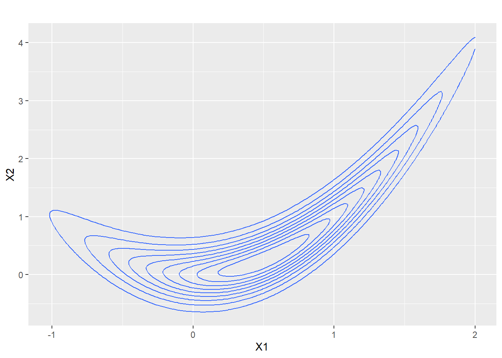
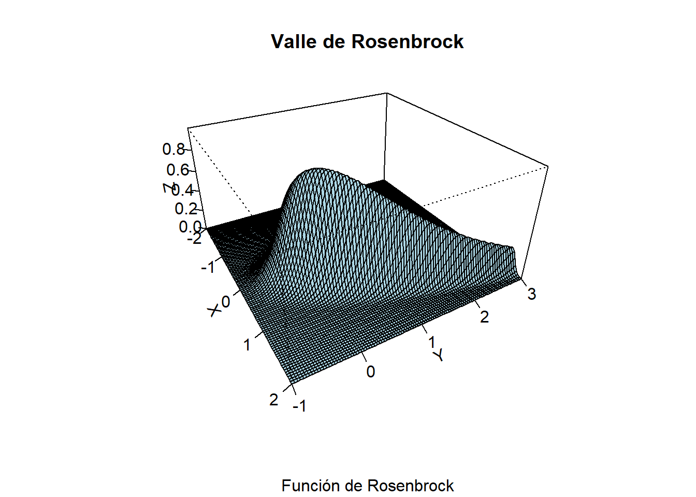
Se obtienen muestras utilizando tres matrices de covariancias distintas para la distribución que propone los saltos. Estas son: \[\Sigma_1=\begin{pmatrix} 4 & 1 \\ 1 & 4 \end{pmatrix} \] Las muestras del primer postirior resultan de la forma
\[\Sigma_2=\begin{pmatrix} 1 & 0 \\ 0 & 1 \end{pmatrix} \] Las muestrar del segundo postirior obtenida resultan de la forma
\[\Sigma_3=\begin{pmatrix} 2 & -2 \\ -2 & 5 \end{pmatrix} \] Las muestrar del tercer postirior obtenida resultan de la forma
Se comparan las trayectorias para las distintas muestras obtenidas, y posteriormente se analizan las funciones de autocorrelación:
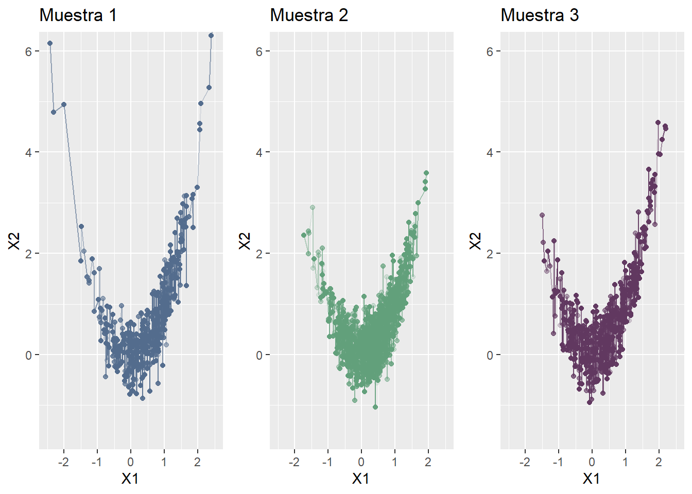
Se observa que la trayectoria de la primera y tercera muestra parecen presentar valores en todo el recorrido de la función de Rosenbrock, mientras que la muestra obtenida con la segunda cadena se restringe a los valores centrales de dicha función.
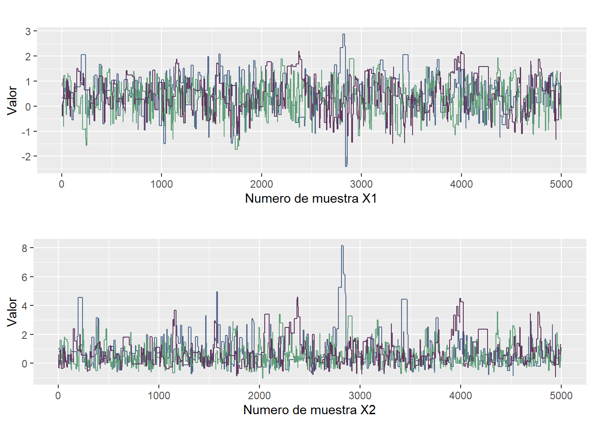
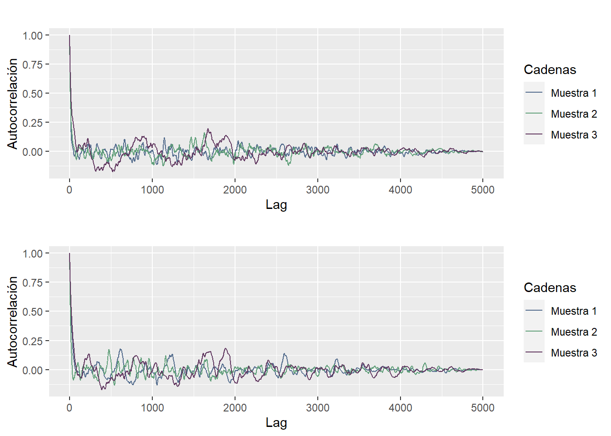
| $N_{eff}\ para\ X_1$ | $N_{eff}\ para\ X_2$ | |
|---|---|---|
| Muestra 1 | 218.43 | 113.38 |
| Muestra 2 | 185.14 | 214.42 |
| Muestra 3 | 98.23 | 92.24 |
A diferencia de las muestras 1 y 2, la tercera muestra presenta una mayor autocorrelación en sus observaciones, y debido a esto se puede observar que también el número efectivo de muestras disminuye en prácticamente la mitad de las observaciones. Esto podría deberse a que la matriz de covarianza utilizada en esta cadena no acompaña la forma de la distribución a posteriori.
Nuevamente, con el motivo de analizar la calidad de las muestras obtenidas, se calculan y comparan algunas probabilidades mediante dichas muestras y el método de la grilla.
| Muestras | Montecarlo | Grilla | Prob. Exacta | |
|---|---|---|---|---|
| P(0< X1 <1 ; 0< X2 <1) | 0.3896 | 0.5164 | 0.3697 | 0.5137 |
| P(-1< X1 <0 ; 0< X2 <1) | 0.1478 | 0.2041 | 0.1444 | 0.2022 |
| P(1< X1 <2 ; 2< X2 <3) | 0.0298 | 0.0872 | 0.0605 | 0.0838 |
Estos resultados exponen una debilidad en el algoritmo de Metropolis Hasting. Se observan importantes diferencias entre las probabilidades calculadas con MH o grilla en comparación a las probabilidades calculadas con Monte Carlo o integración exacta (estos últimos dos metodos, más precisos).
Conclusiones
A lo largo del trabajo, se observa que Metropolis Hastings es una variante que permite sacar muestras de distribuciones de probabilidad, incluso cuando no se tiene idea de cómo es exactamente esa distribución, solo se necesita su ley. Se ha probado en distribuciones unidimensionales y bidimensionales, como las distribuciones de Kumaraswamy y Rosenbrock. Se ha interactuado con diferentes formas de distribución propuesta y se ha observado cómo esta afecta a la eficiencia del algoritmo. Sin embargo, se han identificado algunas debilidades, por ejemplo, su rendimiento puede ser sensible a la elección de la distribución propuesta, lo que puede afectar la eficiencia y la convergencia del algoritmo. Además, puede ser computacionalmente costoso para dimensiones muy altas o distribuciones multimodales.
Es interesante ver a Metropolis Hastings como una herramienta en estadística bayesiana, ya que ayuda a muestrear y/o graficar distribuciones a posteriori. No obstante, se conocen métodos más precisos para obtener muestras de distribuciones complejas, como por ejemplo, Hamiltonian - Monte Carlo.